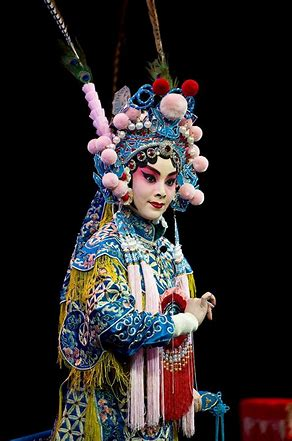
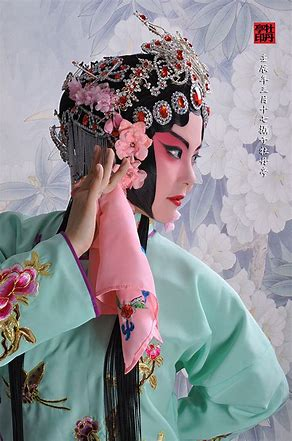
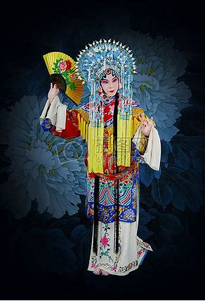
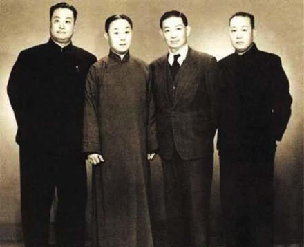
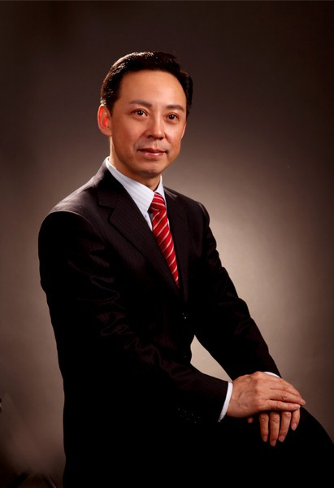
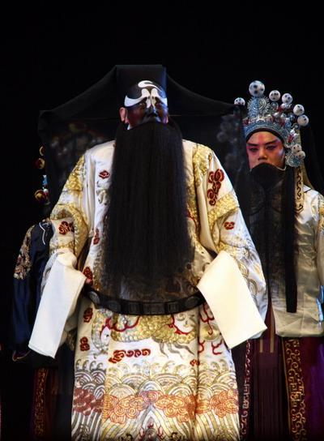
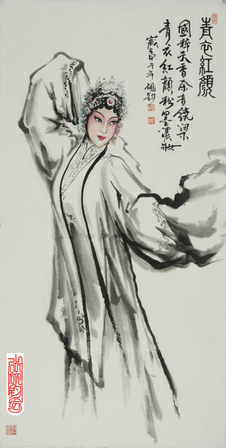
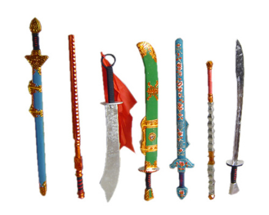
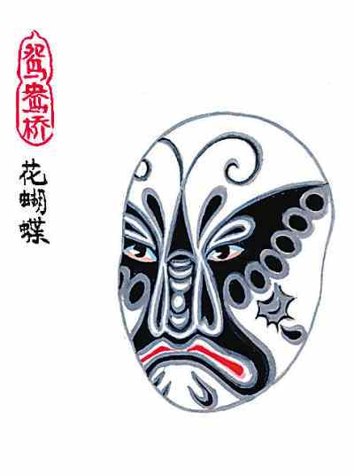
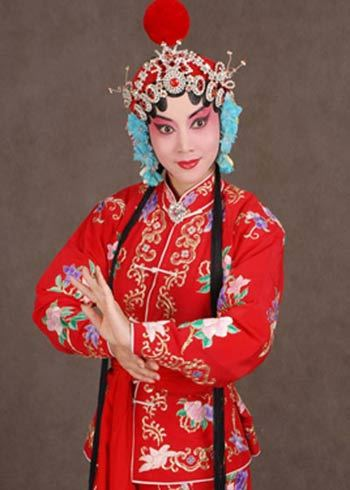

|
1、概览
京剧，又称平剧、京戏等，中国国粹之一，是中国影响力最大的戏曲剧种，分布地以北京为中心，遍及全国各地。 清代乾隆五十五年（1790年）起，原在南方演出的三庆、四喜、春台、和春 [1]等多以安徽籍艺人为主的四大徽班陆续进入北京，与来自湖北的汉调艺人合作，同时接受了昆曲、秦
腔的部分剧目、曲调和表演方法，又吸收了一些地方民间曲调，通过不断的交流、融合，最终形成京剧。 京剧在文学、表演、音乐、舞台美术等各个方面都有一套规范化的艺术表现形式。京剧的唱腔
属板式变化体，以二簧、西皮为主要声腔。京剧伴奏分文场和武场两大类，文场以胡琴为主奏乐器，武场以打击乐伴奏为主 （鼓板、大锣、铙钹、小锣）。京剧的角色分为生、旦、净、丑、杂、武、流等行当，后三行已不再立专行。京剧现在的角色分为生、旦、净、丑四种。各行当都有一套表演形式。唱、念、做、打的技艺各具特色。京剧以历史故事为主要演出内容，传统剧目约有一千三百多个，常演的在三四百个以上。 京剧流播全国，影响甚广，有“国剧”之称。以梅兰芳命名的京剧表演体系被视为东方戏剧表演体系的代表，为世界三大表演体系之一。京剧是中华民族传统文化的重要表现形式，其中的多种艺术元素被喻作中国传统文化的象征符号。 2006年5月，京剧被国务院批准列入第一批国家级非物质文化遗产名录。 2010年，被列入联合国教科文组织非物质文化遗产名录（名册）人类非物质文化遗产代表名录 。
2、历史沿革
起源期
徽州商人富甲一方，商业的成功引发了文化消费欲望的高涨 [5]。随着社会经济的发展和戏曲声腔昆山腔的兴起，纷纷蓄养家班，角色斗艺，并卖力为乾隆下江南收集声色歌舞，不惜重金包装徽剧色艺，客观上为徽剧进京创造了条件。雄霸明清商界500余年的徽州商帮以盐商出名，黄山歙县的盐商尤其出名，富甲一方。
随着社会经济的发展和戏曲声腔昆山腔的兴起，江南江北文人士大夫和富商巨贾纷纷蓄养家庭戏班。已经在外地商界崭露头角的徽商也纷纷效仿。长期为某个徽州商人所养所用的戏曲班社就被外人称为“徽班”。徽商广蓄家班，安徽沿江一带，包括古徽州的地方戏也开始兴盛。他们唱昆腔，由于语言的差异而不“谐吴音”，不经意间唱出了一点。尤以诞生在安徽安庆市怀宁县的石牌调最著名。
徽州艺人带着乡音下扬州，得到了徽商们的亲情惠顾和重金扶持。他们或出没于码头街肆，或为徽商富贾所容留。技艺得到发展，乡音也渐占上风。
同光十三绝值得一提的是，歙县大盐商江春，是一位品味极高的戏曲鉴赏家，他酷爱戏曲，家中常常“曲剧三四部，同日分亭馆宴客，客至以数百计”。他把各种名角聚在一起，又让不同声腔同台互补，使异军突起的徽班具有了博采众长的开放格局。“乱弹”乱唱，红火异常。这时最叫彩的是来自安庆的戏曲艺人，清李斗在《扬州画舫录》中就这样写道：安庆色艺最优，盖于本地乱弹，故本地乱弹间有聘之入班者。徽商在商界进一步站稳了脚跟，他们和戏曲艺术的关系也越来越密切。而涌现出大批戏曲家的“徽班”，也在新的历史条件下得到了进一步的发展。

石牌是安庆市怀宁县一个古老的集镇，“无石不成班”的“石”即指这里，也泛指安庆及其所属各千艘。江西、福建、湖北等地客商纷纷在此设馆驻节。当时的石牌除本地居民外，大都是过往船帮和商户，在生存问题变得比较轻松的时候，他们开始构建自己的市井文化。
石牌当时可供表演的戏剧舞台多达800处，不仅有戏园、戏楼，还有花戏台。戏园，在石牌镇就有3家。上镇横街的长乐大戏院可容纳观众600多人，专供徽调、皮簧班演出。戏楼通常在祠堂内。祠堂戏楼通常只唱大戏，每年做冬至节、族内有人中举、升官以及族内官绅庆寿等，都要聘戏班在戏楼演出。此外，祠堂大修落成，也必邀班唱戏以示祝贺。《都剧赋》描述：“徽班日失丽，始自石牌”。表明安庆的徽班历史上曾经出现过辉煌，很多京剧前辈名伶都是这一带的人，因而有“无石不成班”的说法。
在石牌的弹丸之地涌现出了郝天秀、程长庚、杨月楼等多位开一代风气的色艺最优，”“无石（牌）不成班。”之说一时间广为流传。细心的京剧票友不难发现，京剧的唱腔中有很多字辞的发音是与北京方言不相同的，如果你对安庆地区的方言有所了解，就会发现，这些字辞却与安庆方言里的发音一模一样。
安庆民国初期就有“民众”大戏院，当时全国京剧名角基本上都在此演出过，他们都带着“朝圣”的心情来安庆登台，戏剧大家曹禺到怀宁石牌镇，下车第一句话就是“我来朝圣”。京剧界老科班出来的人，不在安庆演上十天，不唱连本，在当时都被认为是没有发展前途的“角”。从安庆古镇石牌乡野间发源的徽剧，走出了古镇，走到了北京，徽班进京的辉煌历史光环至今还笼罩着古镇石牌
安庆是中国较早接受现代文明的城市之一，也是国家历史文化名城，同时安庆还是享誉世界，极具地方特色的戏剧——黄梅戏的故乡。程长庚纪念馆，位于安庆潜山县，馆内珍藏三百多件珍贵的实物和图片资料，再现了京剧艺术的发展兴盛历程。此外，还有程长庚故居供戏迷瞻仰。
京剧徽班进京的出发地在扬州，身怀绝技的优伶们，出发前一定要到位于苏唱街的梨园总局碰碰头，商量一下出发日程和演出剧目，并在那里一起摆个身段、甩两下水袖、扬几声珠圆玉润的歌喉。有时干脆排演几出折子戏，或是《游园》，或是《思凡》，声情并茂，婀娜多姿，那时的苏唱街，十分热闹。
苏唱街，是老扬州惟一保存下来的与戏班直接有关的街道。当年盐商徐尚志从苏州招徕昆腔艺人办起的扬州第一个昆腔班“老徐班”，就在这条街上。
1790年秋，为庆祝乾隆八旬寿辰，扬州盐商江鹤亭（安徽人）在安庆组织了一个名为“三庆班”的徽戏戏班，由艺人高朗亭率领进京参加祝寿演出这个徽班以唱二簧调为主，兼唱昆曲、吹腔、梆子等，是个诸腔并奏的戏班。这次北京的祝寿演出规模盛大，从西华门到西直门外高粱桥，每隔数十步设一戏台，南腔北调，四方之乐，荟萃争妍。或弦歌高唱，或抖扇舞衫，前面还没有歇下，后面又已开场，群戏荟萃，众艺争胜。在这场艺术竞赛当中，第一次进京的三庆徽班即崭露头角，引人瞩目。三庆班的高朗亭是安徽安庆人，入京时才十六岁，演旦角，擅长二簧腔，技艺精湛。《目下看花记》称他：“宛然巾帼，无分毫矫强。不必征歌，一颦一笑，一起一坐，描摹雌软神情，几乎化境。”
三庆班进京获得成功后，又有四喜班、和春班、春台班等徽班进入北京，并逐渐称雄于京华的剧坛。这就是所谓的“四大徽班进京”。
四大徽班各有所长，有“三庆的轴子，四喜的曲子，和春的把子，春台的孩子”的说法，轴子指以连演整本大戏著称，曲子指擅长演唱昆曲，把子指以武戏取胜，孩子指以童伶见长。
在捧旦之风十分火爆的京城，技艺不凡的高朗亭自然受宠。抵达北京后，他接替原三庆班班主余老四掌班，一做就是30多年，同时还担任了京师戏曲界行会组织“精忠庙”的会首，通过精忠庙对北京的戏班、戏园实行行政管理，他也成为梨园领袖。继高朗亭之后，程长庚、徐小香、杨月楼、刘赶三等人均任过此职。

至嘉庆初，徽班在北京戏曲舞台上已取得主导地位，据《梦华琐簿》记载：“戏庄演剧必‘徽班’。戏园之大者，如‘广德楼’、‘广和楼’、‘三庆园’、‘庆乐园’，亦必以‘徽班’为主。下此则‘徽班’‘小班’‘西班’，相杂适均矣。”
四大徽班进京献艺，揭开了200多年波澜壮阔的中国京剧史的序幕。
京剧在京的各声腔剧种的艺人，面对徽班无所不能、无所不精的艺术优势，无力与之竞争，多半都转而归附徽班。他们中有京师舞台各声腔剧种的名优，如加入春台班的湖北汉戏名优米喜子、李凤林，加入四喜班的湖南乱弹（皮黄）名优韩小玉，加入三庆班的北京籍京腔演员王全福等，于是就形成了多种声腔剧种荟萃徽班之势。也因此，徽班在诸腔杂奏的过程中，从“两下锅”“三下锅”到“风搅雪”，逐渐侧重皮黄戏的演出。
京剧前身是清初流行于江南地区，以唱吹腔、高拨子、二黄为主的徽班。徽班流动性强，与其他剧种接触频繁，在声腔上互有交流渗透，因此在发展过程中也搬演了不少昆腔戏，还吸收了啰啰腔和其他一些杂曲。清乾隆五十五年（1790），以高朗亭（名月官）为首的第一个徽班（三庆班）进入北京，参加乾隆帝八十寿辰庆祝演出。《扬州画舫录》载：“高朗亭入京师，以安庆花部，合京秦二腔，名其班曰三庆。”刊于道光二十二年（1842）的杨懋建《梦华琐簿》也说：“而三庆又在四喜之先，乾隆五十五年庚戌，高宗八旬万寿入都祝匣时，称‘三庆徽’，是为徽班鼻祖。”伍子舒在《随园诗话》批注中则更具体指出是“闽浙总督伍纳拉命浙江盐商偕安庆徽人都祝厘。”随后还有不少徽班陆续进京。著名的为三庆、四喜、春台、和春四班，虽然和春成立于嘉庆八年（1803），迟于三庆十三年，但后世仍并称之为“四大徽班进京”。
孕育期
清初，京城戏曲舞台上盛行昆曲与京腔（青阳腔）。乾隆中叶后，昆曲渐而衰落，京腔兴盛取代昆曲一统京城舞台。乾隆四十五年（1780年）秦腔艺人魏长生由川进京。魏氏搭双庆班演出秦腔《滚楼》、《背娃进府》等剧。魏长生扮相俊美，嗓音甜润，唱腔委婉，做工细腻，一出《滚楼》即轰动京城。双庆班也因此被誉为“京都第一”。自此，京腔开始衰微，京腔六大名班之大成班、王府班、余庆班、裕庆班、萃庆班、保和班也无人过问，纷纷搭入秦腔班谋生。乾隆五十年（1785年），清廷以魏长生的表演有伤风化，明令禁止秦腔在京城演出，将魏长生逐出京城。
乾隆五十五年（1790年），继三庆班落脚京城后（班址位于韩家台胡同内），又有四喜、启秀、霓翠、春台、和春、三和、嵩祝、金钰、大景和等班，亦在大栅栏地区落脚演出。其中以三庆、四喜、和春、春台四家名声最盛，故有“四大徽班”之称。
春台班进京时间，按汉调名家米应先于乾隆末年，在京曾担任春台班台柱时始，证明该班进京时间早于四喜和和春。春台班位于百顺胡同。
四喜班于嘉庆初来京。徽戏、昆曲兼演、尤以昆曲为著，故有“新排一曲桃花扇，到处哄传四喜班”之语。该班位于陕西巷内。
和春班于嘉庆八年（1804年）于李铁拐斜街组建。该班以武戏见长。道光十三年（1853年）解散。

“四大徽班”的演出剧目，表演风格，各有其长，故时有“三庆的轴子，四喜的曲子、和春的把子、春台的孩子”之誉。“四大徽班”除演唱徽调外，昆腔、吹腔、四平调、梆子腔亦用，可谓诸腔并奏。在表演艺术上广征博采吸取诸家剧种之长，融于徽戏之中。兼之演出阵容齐整，上演的剧目丰富，颇受京城观众欢迎。自魏长生被迫离京，秦腔不振，秦腔艺人为了生计，纷纷搭入徽班，形成了徽、秦两腔融合的局面。在徽、秦合流过程中，徽班广泛取纳秦腔的演唱、表演之精和大量的剧本移植，为徽戏艺术进一步发展，创造了有利条件。
大破铜网阵 白玉堂汉剧流行于湖北，其声腔中的二黄、西皮与徽戏有着血缘关系。徽、汉二剧在进京前已有广泛的艺术交融。继乾隆末年，汉剧名家米应先进京后，道光年初（1821年），先后又有著名汉剧老生李六、王洪贵、余三胜，小生龙德云等入京，分别搭入徽班春台、和春班演唱。米应先以唱关羽戏著称，三庆班主程长庚的红净戏，皆由米应先所授。李六以《醉写吓蛮书》《扫雪》见长；王洪贵则以《让成都》《击鼓骂曹》而享名；小生龙德云善演《辕门射戟》《黄鹤楼》等剧；余三胜噪音醇厚，唱腔优美，文武兼备，以演《定军山》《四郎探母》《当锏卖马》《碰碑》等老生剧目著称。汉剧演员搭入徽班后，将声腔曲调，表演技能，演出剧目溶于徽戏之中，使徽戏的唱腔板式日趋丰富完善，唱法、念白更具北京地区语音特点，而易于京人接受。
道光二十五年（1845年）各大名班，均为老生担任领班。徽、汉合流后，促成了湖北的西皮调与安徽的二簧调再次交流。徽、秦、汉的合流，为京剧的诞生奠定了基础。
形成期
道光二十年至咸丰十年间（1840—1860），经徽戏、秦腔、汉调的合流，并借鉴吸收昆曲、京腔之长而形成了京剧。其标志之一：曲调板式完备丰富，超越了徽、秦、汉三剧中的任何一种。唱腔由板腔体和曲牌体混合组成。声腔主要以二簧、西皮为主；之二，行当大体完备；之三，形成了一批京剧剧目；之四，程长庚，余三胜、张二奎为京剧形成初期的代表，时称“老生三杰”、“三鼎甲”即：“状元”张二奎、“榜眼”程长庚、“探花”余三胜。他们在演唱及表演风格上各俱特色，在创造京剧的主要腔调西皮、二簧上和京剧戏曲形式上，以及具有北京语言特点的说白、字音上，做出了卓越贡献。
[7]第一代京剧演员中，尚有老生卢胜奎、薛印轩、张汝林、王九龄等；小生龙德云、徐小香；旦胡喜禄、罗巧福、梅巧玲；丑杨鸣玉、刘赶三；老旦郝兰田、谭志道；净朱大麻子、任花脸等，他们为丰富各个行当的声腔及表演艺术，均有独特创造。后任“四喜班”班主的梅巧玲，勇于突破青衣、花旦的严格分工旧规，为旦角的演唱艺术开辟了一条新路。
[7]同光名伶十三绝《同光名伶十三绝》是京剧史上的一幅名伶彩色剧装写真画，由晚清民间画师沈蓉圃绘制。他参照了清代中叶画师贺世魁所绘《京腔十三绝》戏曲人物画的形式，挑选了清同治、光绪年间（1860—1890）京剧舞台上享有盛名的十三位演员（程长庚、卢胜奎、张胜奎、杨月楼、谭鑫培、徐小香、梅巧玲、时小福、余紫云、朱莲芬、郝兰田、刘赶三、杨鸣玉），用工笔重彩把他们扮演的剧中人物描绘出来，显示了作者的深厚功力。此画于民国三十二年（1943年），由进化社朱复昌在书肆收购，经缩小影印问世，并附编《同光名伶十三绝传》一册。
成熟期
1883年—1918年，京剧由形成期步入成熟期，代表人物为时称“老生后三杰”的谭鑫培、汪桂芬、孙菊仙。其中谭鑫培承程长庚、余三胜、张二奎各家艺术之长，又经创造发展，将京剧艺术推进到新的成熟境界。谭在艺术实践中广征博采，从昆曲、梆子、大鼓及京剧青衣、花脸、老旦各行中借鉴，融于演唱之中，创造出独具演唱艺术风格的“谭派”，形成了“无腔不学谭”的局面。二十年代后的余叔岩、言菊朋、高庆奎、马连良等，均在宗“谭派”的基础上发展为各自不同的艺术流派。汪桂芬，艺宗程长庚，演唱雄劲沉郁，悲壮激昂，腔调朴实无华，有“虎啸龙吟”的评道。他因“仿程可以乱真”，故有“长庚再世”之誉。孙菊仙，18岁时选中武秀才，善唱京剧，常入票房演唱，36岁后投师程长庚。他噪音洪亮，高低自如。念白不拘于湖广音和中州韵，多用京音、京字，听来亲切自然。表演大方逼真，接近生活。“老生后三杰”师承各有侧重，艺术风格各异，从全面权衡，谭鑫培文武昆乱不挡，艺术造诣及对京剧的发展，远远超过汪、孙。光绪年间，谭鑫培被称为“伶界大王”，在剧界地位，如当年之程长庚。
咸丰十年（1861年）京剧始入宫廷演出。当年五月初六起至月末，分由三庆班、四喜班、双奎班及外班（京剧班）演出。光绪九年（1883年），慈禧五旬寿日，挑选张淇林、杨隆寿、鲍福山、彩福禄、严福喜等18人入宫当差，不仅演唱，且当京剧教习，向太监们传授技艺。自此，清宫掌管演出事务的机构“升平署”，每年均选著名艺人进宫当差，结止宣统三年（1911年），计有谭鑫培、杨月楼、孙菊仙、陈德霖、王楞仙、杨小楼、余玉琴、朱文英、王瑶卿、龚云甫、穆凤山、钱金福等生、旦、净、丑的名家150余人曾入宫。由于慈禧嗜好京剧，加之京剧名家频繁在宫中献艺，声势日强。同期，位于大栅地区的广德楼、三庆园、庆乐园、中和园、文明园等戏园、日日有京剧演出，形成了京剧一统的局面。京剧成熟期，除“老生后三杰”外，生行：许荫棠、贾洪林；武生：俞菊笙、杨隆寿；净行：何佳山、黄润甫、金秀山、裘桂仙、刘永春等；小生：王楞仙、德珺如、陆华云；旦行：陈德霖、田桂凤、王瑶卿、朱文英；丑行：王长林、张黑、罗百岁、萧长华、郭春山。这一时期，旦角的崛起，形成了旦角与生角并驾齐驱之势。武生俞菊笙，开创了武生自立门户挑梁第一人，他被后人称为“武生鼻祖”。上述名家，在继承中有创新发展，演唱技艺日臻成熟，将京剧推向新的高度。
鼎盛期
京剧四大名旦1917年以来，京剧优秀演员大量涌现，呈现出流派纷呈的繁盛局面，由成熟期发展到鼎盛期，这一时期的代表人物为，梅兰芳、余叔岩。
1927年，北京《顺天时报》举办京剧旦角名伶评选。读者投票选举结果:梅兰芳以演《太真外传》，尚小云以演《摩登伽女》，程砚秋以演《红拂传》，荀慧生以演《丹青引》，荣获“四大名旦”。“四大名旦”脱颖而出，是京剧走向鼎盛的重要标志。他们创造出各具特色的艺术风格，形成了梅兰芳的端庄典雅，尚小云的俏丽刚健，程砚秋的深沉委婉，荀慧生的娇昵柔媚“四大流派”，开创了京剧舞台上以旦为主的格局。武生杨小楼在继俞菊笙、杨月楼之后，将京剧武生表演艺术发展到新高度，被誉为“国剧宗师”、“武生泰斗”。老生中的余叔岩、高庆奎、言菊朋、马连良，20年代时称“四大须生”。同期的时慧宝、王凤卿、贯大元等也是生行中的优秀人才。30年代末、余、言、高先后退出舞台，马连良与谭富英、奚啸伯、杨宝森称之“四大须生”。女须生孟小冬，具有较高艺术造诣，颇有乃师余叔岩的艺术风范。

1936年秋，北京大、中学校爱好京剧者及广大观众给各报写信，倡议进行京剧童伶选举。时富连成社社长叶龙章与北平《立言报》社长金达志商妥，由该报发表通告，专门接待各界投票，逐日在报上发表投票数字，并约请“韵石社”几人来报社监督。规定投票日期为半月，到期查点票数中华戏曲学校和富连成社负责人及《实报》《实事白话报》《北京晚报》《戏剧报》亦派人当场查验票数。选举结果，富连成社李世芳得票约万张，当选“童伶主席”。生部冠军王金璐，亚军叶世长；旦角冠军毛世来，亚军宋德珠；净角冠军裘世戎，亚军赵德钰；丑角冠军詹世甫，亚军殷金振。选举结束后，于虎坊桥富连成社举行庆祝大会，并于当晚在鲜鱼口内华乐戏院举行加冕典礼，由李世芳、袁世海演出了《霸王别姬》。
童伶选举结束后，仍由《立言报》主持，选出李世芳、张君秋、毛世来、宋德珠为“四小名旦”，“四小名旦”联袂于长安、新新两家戏院演出了《白蛇传》和《四五花洞》，以示祝贺。
当代著名演员(4张)流派纷呈，人才济济，是京剧鼎盛期的又一标志。这一时期除杨派（杨小楼），以旦角划分的梅派（梅兰芳）、尚派（尚小云）、程派（程砚秋）、荀派（荀慧生）外，旦角中还有筱派（筱翠花）及宋派（宋德珠）、张派（张君秋）；老生行中的余派（余叔岩）、高派（高庆奎）、言派（言菊朋）、马派（马连良）、奚派（奚啸伯）、杨派（杨宝森）、新谭派（富英）；净行中的金派（金少山）、侯派（侯喜瑞）、郝派（郝寿臣）以及50年代后产生的裘派（裘盛戎）；小生行中的姜派（姜妙香）、叶派（叶盛兰）；老旦行中的龚派（龚云甫）、李派（李多奎）；丑行中的叶派（叶盛章）等。同期尚有众多京剧表演艺术家，如生行中的王凤卿、孟小冬、时慧宝、王又宸、李洪春、谭小培、李万春、李少春、高盛麟等；旦行中的阎岚秋、徐碧云、朱琴心、赵桐珊、雪艳琴、新艳秋、章遏云、金少梅、碧云霞、琴雪芳、王玉蓉、言慧珠、童芷苓、梁小鸾、吴素秋、赵燕侠、杜近芳、陈永玲等；小生中的金仲仁、茹富兰、程继先；丑行中的郭春山、慈瑞泉、马富禄、张春华等。
2010年11月16日京剧被列入“人类非物质文化遗产代表作名录”。
文化特征
返回目录
京剧较擅长于表现历史题材的政治和军事斗争，故事大多取自历史演义和小说话本。既有整本的大戏，也有大量的折子戏，此外还有一些连接台本戏。
京剧表演的四种艺术手法：唱、念、做、打，也是京剧表演四项基本功。唱指歌唱，念指具有音乐性的念白，二者相辅相成，构成歌舞化的京剧表演艺术两大要素之一的“歌”，做指舞蹈化的形体动作，打指武打和翻跌的技艺，二者相互结合，构成歌舞化的京剧表演艺术两大要素之一的“舞”。戏曲演员从小就要从这四个方面进行训练，虽然有的演员擅长唱功（唱功老生），有的行当以做功（花旦）为主，有的以武打为主（武净）。但是要求每一个演员必须有过硬的唱、念、做、打四种基本功。只有这样才能充分地发挥京剧的艺术特色。更好地表现和刻画戏中的各种人物形象。京剧有唱，有舞，有对白，有武打，有各种象征性的动作，是一种高度综合性的艺术
京剧行当京剧行当的划分，除依据人物的自然属性（性别、年龄）和社会属性（身份、职业）外，主要是按人物的性格特征来分类。京剧班社旧有“七行七科”之说：七行即生行、旦行（亦称占行）、净行、丑行、杂行、武行、流行。
京剧舞台上的一切都不是按照生活里的原貌出现的。京剧舞台上的角色也不是按照生活当中人的本来面貌出现的，而是根据所扮演角色的性别、性格、年龄、职业以及社会地位等，在化妆、服装各方面加以若干艺术的夸张，这样就把舞台上的角色划分成为生、旦、净、丑四种类型。这四种类型在京剧里的专门名词叫做“行当”。
生
除了花脸以及丑角以外的男性正面角色的统称，分老生（又分重唱的安工老生，重武的靠把老生）、武生（分长靠武生、短打武生并应工猴儿戏）、小生（分扇子生、雉尾生、穷生、武小生）。

旦
女性正面角色的统称，分青衣（正旦）、花旦、闺门旦、刀马旦、武旦、彩旦、老旦。
净
俗称花脸，大多是扮演性格、品质或相貌上有些特异的男性人物，化妆用脸谱，音色洪亮，风格粗犷。“净”又分为以唱功为主的大花脸，分正净（重唱功，称铜锤、黑头）、架子花（重工架）、武二花、摔打花、油花（一称毛净）。
丑
扮演喜剧角色，因在鼻梁上抹一小块白粉，俗称小花脸。分文丑（分方巾丑、袍带丑、老丑、荣衣丑，并兼演彩旦、婆子）、武丑（又称开口跳）等。各个行当都有一套表演程式，在唱念做打的技艺上各具特色
唱腔分类
京剧主要分为“西皮”与“二黄”两大类。
常见剧目中，有《四郎探母》，杨延辉唱的“未开言不由人泪流满面”就是老生的“西皮导板”，铁镜公主唱的“夫妻们打坐在皇宫院”就是青衣的“西皮导板”。西皮导板用来起头大量的唱段，比较常用。诸如此类的还有该剧中杨宗保唱的“杨宗保在马上传将令”是小生的西皮导板，《铡美案》中包拯唱的“包龙图打坐在开封府”是净行的西皮导板，《打龙袍》中国太唱的“龙驹凤辇进皇城”则是老旦的西皮导板。西皮导板种类虽然繁多，可过门基本类似，只要听熟了过门就知道演员要开唱什么板式了。如果同一出戏中导板太多，琴师会多用不同的花过门伴奏，以免产生听觉疲劳。
闷帘导板与一般导板的唱法基本一致，但是在演员没有上场的情况下先在幕后唱的，如《逍遥津》中的刘协（汉献帝）在幕内有一大段唱“父子们在宫院伤心落泪”就是闷帘导板，唱完后人物才出场。但这是二黄导板，不是西皮导板。
返回目录
发音技巧
真嗓
水墨京剧人物(11张)亦名大嗓、本嗓。京剧演员发音方法之一。演唱时，气从丹田而出，通过喉腔共鸣，直接发出声来，称为真嗓。用真嗓发出的声音称真声。如丹田气经过喉腔时，演员将喉腔缩小，使之发出比真嗓较高的音调，则称为假嗓。真嗓与假嗓在行腔时衔接自然，不露痕迹，就能使音域宽广，高低音运转自如。京剧的生行（老生、武生、红生）、净行、丑行、老旦等行当，在演唱时均用真嗓。小生演唱用假嗓，但念白则用真假嗓结合。
假嗓
亦名小嗓、二本嗓。京剧演员发音方法之一。系与真嗓、大嗓、本嗓相对而言。用假嗓发出的声音称假声。发声时，与真嗓相比喉孔缩小，部位抬高，气流变细。假嗓发音的音调较真嗓为高。京剧的旦角、小生的演唱均用假嗓，但二者声音的刚柔力度有所不同
左嗓
京剧声乐名词。主要指男声中一种不正常的嗓音，能高而不能低，另外声音刚而扁，圆润不足，有些专唱高调门的老生或武生，即以此嗓演唱。老生嗓音有纯粹左嗓，亦有本嗓而略带左者。另外，左嗓有时亦用作另一解释，指嗓音与伴奏乐器不合，即一般所谓的不搭调。
吊嗓
亦作调嗓。京剧演员的练唱方法，也是演员唱功锻炼的步骤之一。演员每天除喊嗓、念白外，还须用胡琴（或加鼓板等）伴奏，大声练唱戏中的唱段。有的先用一般调门，然后适当升高。吊嗓的作用：（1）通过大声练唱，使声音符合在舞台上演唱的要求，由于不间断的锻炼，可使嗓音日益嘹亮圆润，气力充沛，口齿清晰有力，并保持耐久能力。（2）熟悉伴奏，全面了解唱腔和伴奏的关系，共同掌握尺寸，解明曲意，表达曲情，使演唱与伴奏的配合达到水乳交融，进而达成艺术上的相互默契，协调整个唱段的表演风格。
喊嗓，
京剧演员练声方法，通过喊嗓可以锻炼各个发声部位，正确地发出各个韵母的本音。喊嗓时间一般在清晨，于空旷地区，大声喊出“唔”、“伊”、“啊”等单元音，由低而高，由高而低，反复进行。待声音舒放后，再以唱段进行练习。
丹田音
又名响堂，京剧声乐名词。演员歌唱时肺部蓄足气，小腹用力，气似从丹田（人身肚脐下约三寸处谓之丹田）发出声。一般传统演唱戏曲练声方法，也认为丹田音最能响堂（即声音送得远，听得清）。

云遮月
京剧声乐名词。这是对老生的圆润而较含蓄的嗓音的一种比喻。这种嗓音，开始听来似觉干涩，以后愈唱愈觉嘹亮动听，使人感到韵味醇厚，潜力无穷，是长期锻炼而形成的一种优美音质。谭鑫培、余叔岩的嗓音都属于这一类型。
塌中
京剧声乐名词。演员在中老年时期，由于生理关系，发生失音现象，完全不能歌唱，叫做塌中。有的演员爱护嗓子，到老仍保持元音不变。用假嗓歌唱的演员，老来塌中的较多。
脑后音
京剧发声的一种。又名背工音。一般发音，气从丹田而出，经过喉腔共鸣，直接发出来。脑后音虽然同样气从丹田，但发音时，喉腔稍加压缩，打开后咽壁，提高软颚，将声音送入头腔，与鼻音相聚，使声音迂回在脑后，通过头腔共鸣，发出一种含蓄浑厚的音调。脑后音发音苍劲有力，能达远闻，而近听又不觉其尖厉。老生和净角唱腔中，凡遇闭口音（如“一七辙”）的高音，多用此种唱法。旦角唱腔用脑后音者较少，程（砚秋）派唱腔有时用之。
荒腔
亦作黄腔、黄调或凉调。京剧声乐名词。指演员唱曲音调不准，习惯上专指略低于调门的变音。大部分都是由于演员先天生理条件所造成，如声带变异、耳音不准等。有时也由于练声不得法所致。
冒调
京剧声乐名词。指演员唱曲音调略高于规定的调门。大部分是由于先天生理条件所造成。有的是由于生理条件（如声带）临时发生故障；有时也由于练声不得法所致。
走板
京剧声乐名词。指演员唱曲不符合规定的节拍。京剧唱腔中有一板三眼、一板一眼、流水板等各种不同的板槽，行腔时如背离板眼的规定，失去节拍的分寸，即谓走板。
不搭
调京剧声乐名词。指演员唱曲音调或高或低，不合于规定的调门。习称跑调。
气口
京剧演唱方法之一。指演员唱曲时吸气的方法。京剧各种唱腔长短不一，节奏快慢各异，演员须掌握准确吸气方法，才能唱得从容不迫，优美动听。气口包括换气、偷气两种。换气指唱腔间歇中的吸气，偷气是在乐句若断若续中吸气而不使听者觉察。
换气
京剧演唱方法之一。演唱时凡遇长腔或拔高处，必先吸气，作好充分准备。换气不是停腔再唱或明显稍顿再接唱，而是在行腔吞吐字音的瞬间，乘便呼吸，蓄气待换。唱腔中在何处换气，因人而异，一般称为气口。
偷气
京剧演唱方法之一。指换气时不着痕迹，在观众不觉察时偷换。如《捉放曹》中陈宫所唱“马行在夹道内我难以回马”，唱完前六字及“内”字长腔，利用“我”这一衬字向内“偷”吸一口气，以便唱足下面“难以回马”的腔，即谓之偷气。
嘎调
在京剧唱腔中，凡是用突出拔高的音唱某一字时，习称嘎调。如《四郎探母》中杨延辉唱“站立宫门叫小番”一句中的“番”字，《定军山》中黄忠唱“扫明天午时三刻成功劳”一句中的“天”字等，均称嘎调。
长吭长
（音掌）是增长，吭是嗓音的俗称，此处指音量。长吭好似加大音量。
砸夯
比喻演员演唱似夯地基时的鼓努为力，含贬意。演员不善于掌握演唱方法，用气过头，或使蛮力，演唱（多在尾音）出现笨拙的重音，谓之砸夯。
返回目录
特有名词
工尺
戏曲音乐名词。泛指戏曲曲谱上曲词右侧所注音阶符号。我国传统民族音乐，以“合、四、上、尺、工、凡、六”等字作为音阶的符号，相当于西洋音乐的“1234567”。习惯上把这些符号统称为“工尺”。有的曲谱，曲词旁只注板眼（拍子），不注工尺。有工尺的曲谱，名为工尺谱。
板眼
戏曲音乐名词。传统唱曲时，常以鼓板按节拍，凡强拍均击板，故称该拍为板。次强拍和弱拍则以鼓签敲鼓或用手指按拍，分别称为中眼、小眼（在四拍子中前一弱拍称头眼或初眼，后一弱拍称末眼）。合称板眼。
过门
京剧音乐名词。指在唱句与唱句之间，唱段与唱段之间的间奏音乐。唱句与唱句之间常用小过门儿，唱段与唱段之间常用大过门。但由于板式不同，亦有不少例外，并无固定模式。
挂儿
京剧音乐名词。挂儿是“过儿”的谐音，专指在唱段与唱段之间的大过门，一般多指华彩的间奏音乐。在唱句与唱句之间的小过门不称挂儿。垫头，京剧音乐名词。指在乐汇与乐汇间起搭桥作用的旋律称为垫头或小垫头，亦名桥。
垫头
旋律较短，一般只有二、三拍，起前后衔接作用。
行旋
京剧音乐名词。指在演员表演动作或对话、独白时的衬托音乐。行旋多为曲牌或简单旋律的反复演奏，主要起烘托气氛的作用。
调门
指演员歌唱时的音高。凡用弦乐器伴奏，都根据演员嗓音的高度自由定调。京剧调门，一般以正宫调为适度，最高的唱乙字调，最低的凡字调，俗称趴字调。同一剧中，两个主要演员音高不同，有时互相迁就，有时临时长（提高）调门或落（降低）调门。

调面
演员唱的音高与伴奏乐器（胡琴、笛子等）的音高相同，叫做调面。意思是按照“调门”的表面歌唱。调面系针对调底而言。在一般情况下，演员都唱调面。
调底
演员唱的音高比伴奏乐器（胡琴、笛子等）的音高低八度，叫做调底。意思是按照调门的底音歌唱。调底系针对调面而言。京剧的某些唱腔，如娃娃调的腔调经常翻高，如将调门定高，演员嗓音不及，如将调门定低，乐器音量有过小，乃采用调底的唱法，把乐器定高八度，演员以低八度的音来歌唱。
定弦
指弦乐器（胡琴、阮等）定“调门”的高低。一般都以笛子作为定弦的标准。
乙字调
京剧音乐名词。工尺谱所用调门之一。定弦时，以笛子小工调的“乙”音（开启第五孔，吹高音），定胡琴的“工”音（西皮调外弦的敞弦）。乙字调为京剧的最高调门
工正调
亦作正宫调。京剧根据笛的音高定胡琴的调门，西皮外弦与笛正宫调的工音同高的称为正宫调。比正宫调高出一度的称乙字调，高出半度的称工半调，比正宫调低一度的称六字调，低半度的称六半调，低二度的俗称趴字调。
工半调
京剧调门之一。略高于正宫调，略低于乙字调。定弦时比照笛子的正宫调定音而略升高。
软工调
京剧调门之一。略低于正宫调，而较六字调稍高。定弦时比照笛子的正宫调定音而略降低。
六字调
京剧调门之一。定弦时，以笛子小工调的“六”音（六孔全闭，吹高音），定胡琴的“工”音（西皮调外弦的敞弦）。六字调为京剧中低于正工调，高低适度的调门。
趴字调
亦作扒字调。京剧调门之一。凡低于六字调一度以上的统称趴字调。
走边
“走边”的来源一说源于晋剧《白虎鞭·走边》中的舞蹈身段；一说是因为凡走边的人物因怕人看见而多在墙边、道边潜身夜行，故而称“走边”。一般来说，《恶虎村》的黄天霸走边最难。《夜奔》的林冲走边最累，《蜈蚣岭》的武松走边最吃功夫。
趟马
，由于京剧中多以马鞭来代替马，或作为骑马的象征，因此凡手持马鞭挥舞着上场后运用圆场、翻身、卧鱼、砍身、摔叉、掏翎、亮相等技巧连续做出打马、勒马或策马疾驰的舞蹈动作的组合就是京剧的趟马。
板式分类
《红灯记人物造型》 陈玉先 设计(10张)京剧的板式是指：唱腔的-板眼结构形式。通俗的讲就是唱腔节奏。通常有四类：一眼板，三眼板，无眼板，散板。在各种声腔中，原板是变化的基础。除原板外，还有慢板、快板、导板、摇板、二六、流水板、快三眼等。
京剧脸谱
分类
红脸含有褒义，代表忠勇；黑脸为中性，代表猛智；蓝脸和绿脸也为中性，代表草莽英雄；黄脸和白脸含贬义，代表凶诈凶恶；金脸和银脸是神秘，代表神妖。
色画方法

基本上分为三类：揉脸、抹脸、勾脸。脸谱最初的作用，只是夸大剧中角色的五官部位和面部的纹理，用夸张的手法表现剧中人的性格、心理和生理上的特征，以此来为整个戏剧的情节服务，可是发展到后来，脸谱由简到繁、由粗到细、由表及里、由浅到深，本身就逐渐成为一种具有民族特色的、以人的面部为表现手段的图案艺术了。
伴奏乐器
京剧伴奏乐器分打击乐器与管弦乐器。打击乐器有鼓板、大锣、铙钹、小锣等，称为“武场”。
管弦乐器有京胡、京二胡、月琴、三弦，称为“文场”。
舞台道具
砌末是大小道具与一些简单装置的统称，是戏曲解决表演与实物矛盾的特殊产物。砌末一词在金、元时期已有。传统戏曲舞台上的砌末包括生活用具（如烛台、灯笼、扇子、手绢、文房四宝、茶具、酒具），交通用具（如轿子、车旗、船桨、马鞭等）。武器又称刀枪把子（如各种刀、枪、剑、斧、锤、鞭、棍、棒等），以及表现环境、点染气氛的种种物件（如布城、大帐、小帐、门旗、纛旗、水旗，风旗、火旗、蛮仪器仗、桌围椅披）等。除常用的砌末之外，也可根据演出需要临时添置。
传统的砌末，是有意识地区别于生活的自然形态之物。它们不是实物的仿制品，而是实物在戏曲中的一种艺术表现。这也是砌末能够与动作、形象相结合的一个重要原因。
在演员没有上场以前，桌椅只是一种抽象的摆设。如演出皇帝视朝，这张桌子便成了视朝时所需的御案；县宫坐衙，这张桌子便成了坐衙时所需的公案；朋友宴会，便成了宴会时所需要的酒席。以上是实物实用，但戏曲舞台上的桌椅还可以做代用品。比如用桌子代替山石，人要上山，就站在桌子上，如果这山很高，就用两张桌子叠起来。要跳墙，就用桌子当墙；要睡觉，将身伏在桌上，用手支住头。至于椅子所代替的就更多了。舞台上表示从矮山爬到高山去，是从椅子了再登到桌子上，椅子还可以代替窑门，代替牢门等等。桌椅无论代表什么，都是妙在似与不似之间。如戏曲中的布城虽然比较简陋，但决不追求城的真实再现。布城可以根据城的需要自由调度。
旗帜在舞台上使用很多，如正方形帅字旗、长方形三军令旗、大纛旗（古代军队里的大旗），都是表示元帅及大本营所在地的。还有水旗、火旗、风旗、车旗等等，这些旗帜是在白色方旗上绘绿色水纹、火焰、风、车轮等等。演员执旗，略微颤动，就可以表示波浪起伏、着火、起风、乘车。
戏曲舞台上并不回避“露假”，也不要求一一写实。扬鞭以代马，摇桨以代船。
代表剧目

京剧继承了皮簧戏的艺术成就及其丰富的剧目。不但有二簧、西皮、吹腔、四平调、拨子等属于二簧系统的剧目。中华人民共和国成立后，经过戏曲工作者和广大戏曲演员相互合作，共同进行整理修改，其中优秀的剧目作为民族文化艺术遗产列入中国新文化艺术林苑而被保留下来，继续在舞台上广泛流传。这类剧目据估计大约有200余出，例如《宇宙锋》《玉堂春》《长坂坡》《群英会》《打渔杀家》《五人义》《挑滑车》《打金枝》《拾玉镯》《三击掌》《六月雪》《四进士》《搜孤救孤》《秦香莲》《打严嵩》《挡马》《金玉奴》《樊江关》《野猪林》《八大锤》《空城计》《霸王别姬》《智取威虎山》等，其题材和表现形式是多种多样的，有文戏、武戏、唱功戏、做功戏、对儿戏、群戏、折子戏、本戏等。各种形式的剧目，统称为传统戏。
返回目录
|